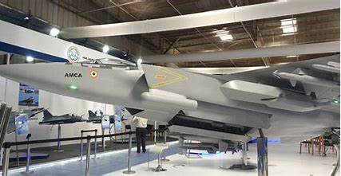

The Hindustan Aeronautics Limited (HAL) Advanced Medium Combat Aircraft (AMCA) is a next-generation, indigenous fighter jet developed by India. Designed to be a multi-role stealth aircraft, the AMCA integrates advanced technologies for enhanced survivability and mission effectiveness. With a focus on superior avionics and radar systems, it aims to excel in air dominance and ground attack roles. The AMCA project reflects India's ambition to bolster its aerospace capabilities and reduce dependency on foreign defense imports. As it progresses, the AMCA signifies a significant stride in India's pursuit of advanced military aviation.
